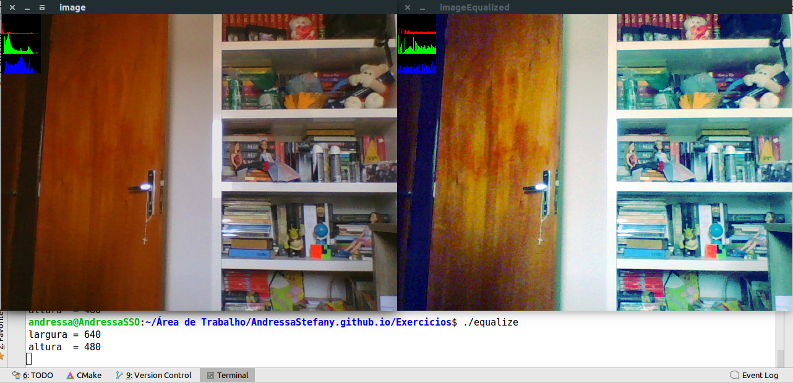
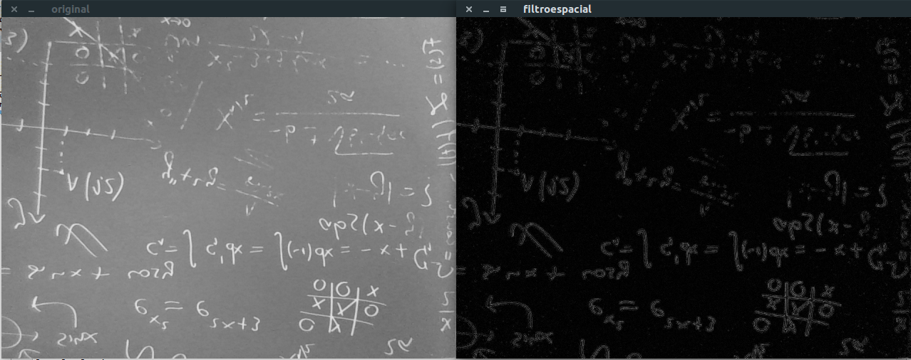
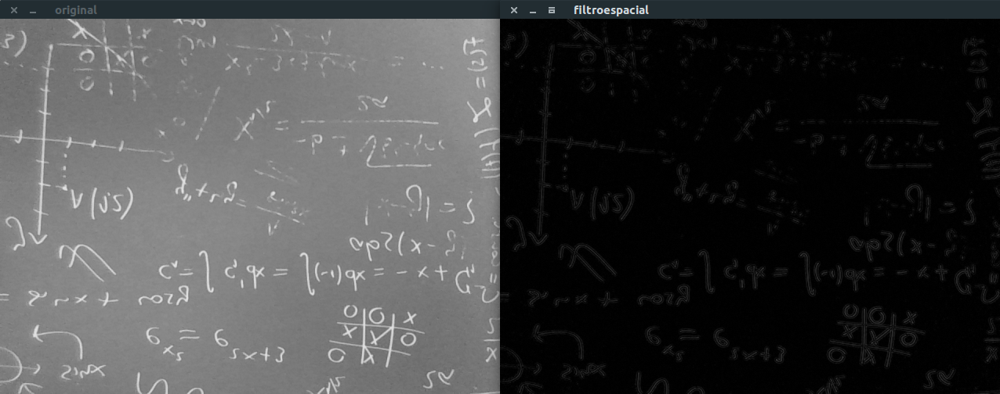
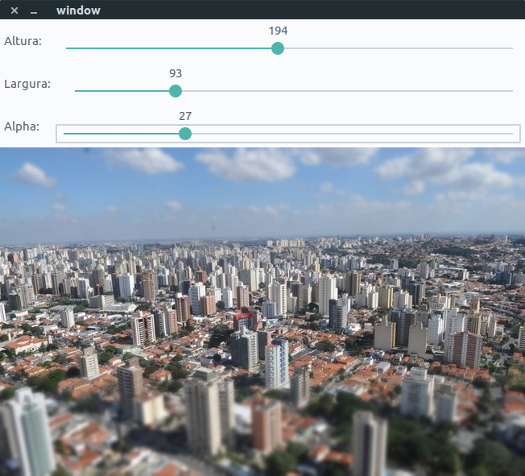
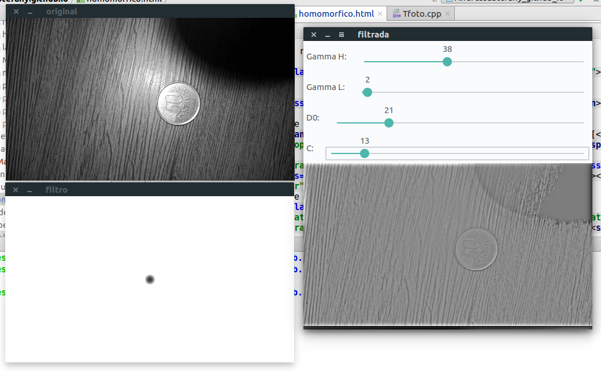
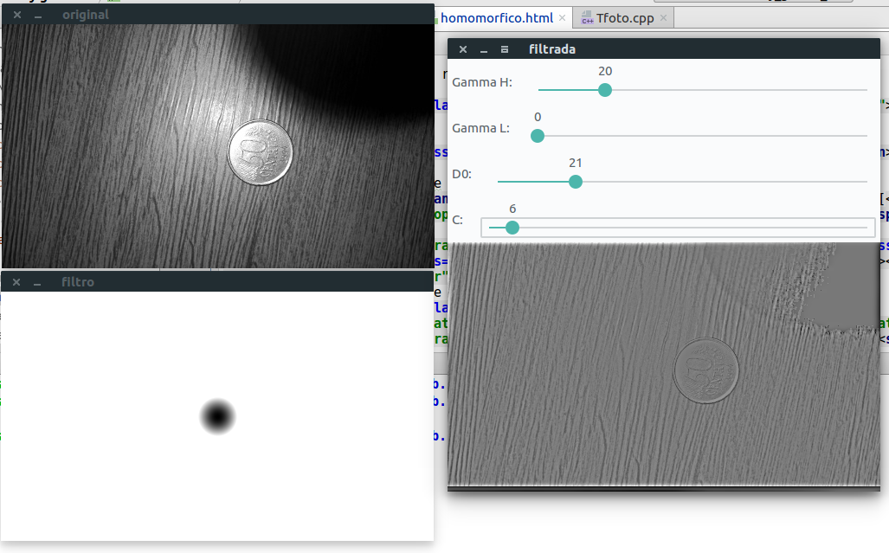
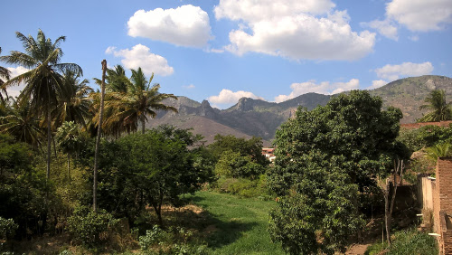
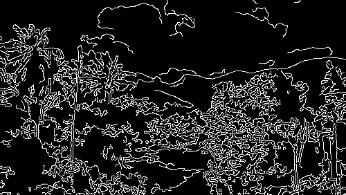

Processamento Digital de Imagens
Neste site você irá encontrar o desenvolvimento dos exercícios da disciplina de Processamento Digital de Imagens propostos no seguinte site: link
Manipulando Pixels em uma Imagem
Regiões
Utilizando o programa exemplos/pixels.cpp como referência, implemente um programa regions.cpp. Esse programa deverá solicitar ao usuário as coordenadas de dois pontos P1P1 e P2P2 localizados dentro dos limites do tamanho da imagem e exibir que lhe for fornecida. Entretanto, a região definida pelo retângulo de vértices opostos definidos pelos pontos P1P1 e P2P2 será exibida com o negativo da imagem na região correspondente.
Resultado:
Troca Regiões
Utilizando o programa exemplos/pixels.cpp como referência, implemente um programa trocaregioes.cpp. Seu programa deverá trocar os quadrantes em diagonal na imagem. Explore o uso da classe Mat e seus construtores para criar as regiões que serão trocadas.
Resultado:
Preenchendo Regiões
Conta Bolhas
Observando-se o programa labeling.cpp como exemplo, é possível verificar que caso existam mais de 255 objetos na cena, o processo de rotulação poderá ficar comprometido. Identifique a situação em que isso ocorre e proponha uma solução para este problema.
Resultado:
Quando houver mais de 255 objetos na cena a contagem ficará comprometida, pois os tons de cinza variam de 0 a 255, para que isso não ocorra, basta fixar o tom de cinza que se desejar pintar as bolhas, dessa forma, a contagem poderá ser um valor acima de 255.
Conta Bolhas com Buracos
Aprimore o algoritmo de contagem apresentado para identificar regiões com ou sem buracos internos que existam na cena. Assuma que objetos com mais de um buraco podem existir. Inclua suporte no seu algoritmo para não contar bolhas que tocam as bordas da imagem. Não se pode presumir, a priori, que elas tenham buracos ou não.
Resultado:
Na imagem abaixo, a "janela1" representa a imagem original, a "janela2" é a imagem após a remoção das bolhas presentes nas bordas, na "janela3" as bolhas foram contadas, por isso não são brancas e, por fim, na "janela4" o fundo foi pintado de uma cor diferente de preto para que fosse possível varrer e identificar quais bolhas possuem buracos, além disso, também há verificação se o buraco encontrado pertence a uma bolha que já foi percorrida antes e contabilizada como bolha com buraco.
Manipulação de Histogramas
Equalização
Utilizando o programa exemplos/histogram.cpp como referência, implemente um programa equalize.cpp. Este deverá, para cada imagem capturada, realizar a equalização do histogram antes de exibir a imagem. Teste sua implementação apontando a câmera para ambientes com iluminações variadas e observando o efeito gerado. Assuma que as imagens processadas serão em tons de cinza.
Resultado:
Ao comparar a imagem original com a imagem processada, é possível observar a mudança do comportamento do histograma, onde a segunda possui uma melhor distribuição das cores ao longo do eixo, o que impacta diretamente na pigmentaçao deixando-a mais viva.

Detecção de Movimento
Utilizando o programa exemplos/histogram.cpp como referência, implemente um programa motiondetector.cpp. Este deverá continuamente calcular o histograma da imagem (apenas uma componente de cor é suficiente) e compará-lo com o último histograma calculado. Quando a diferença entre estes ultrapassar um limiar pré-estabelecido, ative um alarme. Utilize uma função de comparação que julgar conveniente.
Resultado:
Filtragem no Domínio Espacial I
Laplaciano do Gaussiano
Utilizando o programa exemplos/filtroespacial.cpp como referência, implemente um programa laplgauss.cpp. O programa deverá acrescentar mais uma funcionalidade ao exemplo fornecido, permitindo que seja calculado o laplaciano do gaussiano das imagens capturadas. Compare o resultado desse filtro com a simples aplicação do filtro laplaciano.
Resultado:
As imagens abaixo mostram que o resultado do Laplaciano do Gaussiano produz um efeito de aguçamento das bordas mais nítido em comparação à outra imagem onde foi utilizado apenas o laplaciano, pois com o uso do gaussiano, os ruídos da imagem foram amenizados.
- Laplaciano
- Laplaciano do Gaussiano


Filtragem no Domínio Espacial II
Tiltshift em Foto
Utilizando o programa exemplos/addweighted.cpp como referência, implemente um programa tiltshift.cpp. Três ajustes deverão ser providos na tela da interface:
- Um ajuste para regular a altura da região central que entrará em foco;
- Um ajuste para regular a força de decaimento da região borrada;
- Um ajuste para regular a posição vertical do centro da região que entrará em foco. Finalizado o programa, a imagem produzida deverá ser salva em arquivo.
Resultado:

Tiltshift em Vídeo
Utilizando o programa exemplos/addweighted.cpp como referência, implemente um programa tiltshiftvideo.cpp. Tal programa deverá ser capaz de processar um arquivo de vídeo, produzir o efeito de tilt-shift nos quadros presentes e escrever o resultado em outro arquivo de vídeo. A ideia é criar um efeito de miniaturização de cenas. Descarte quadros em uma taxa que julgar conveniente para evidenciar o efeito de stop motion, comum em vídeos desse tipo.
Resultado:
O video original podera ser encontrado aqui.
Filtragem no Domínio da Frequência
Filtro Homomórfico
Utilizando o programa exemplos/dft.cpp como referência, implemente o filtro homomórfico para melhorar imagens com iluminação irregular. Crie uma cena mal iluminada e ajuste os parâmetros do filtro homomórfico para corrigir a iluminação da melhor forma possível. Assuma que a imagem fornecida é em tons de cinza.
Resultado:
- Utilizando Gamma H = 3.8, Gamma L = 0.2, d0 = 2.1 e c = 0.013
- Utilizando Gamma H = 2.0, Gamma L = 0, d0 = 2.1 e c = 0.006


Filtro Canny e Pontilhismo
Canny e a Arte com Pontilhismo
Utilizando os programas exemplos/canny.cpp e exemplos/pontilhismo.cpp como referência, implemente um programa cannypoints.cpp. A idéia é usar as bordas produzidas pelo algoritmo de Canny para melhorar a qualidade da imagem pontilhista gerada. A forma como a informação de borda será usada é livre.
Estratégia: Primeiro, foi gerada a imagem utilizando o mesmo efeito do código pontilhismo.cpp. Em seguida, foi gerada uma imagem usando o filtro Canny, dessa forma, obteve-se os pontos que representam bordas na imagem, com isso, a imagem obtida através do Canny foi percorrida novamente para se ter conhecimento da localização dos pontos de borda e, posteriormente, esses pontos foram pintados mais uma vez na imagem gerada anteriormente pelo pontilhismo, porém, foi utilizado raio 1, fazendo com que os detalhes da imagem pudessem ser realçados.
Resultado:
Imagem original:
Apenas com o Canny:
Utilizando pontilhismo.cpp:
Pontilhismo com o Canny:
*Local: Itapajé-CE.
Sobre
Esse site foi feito para apresentar os exercícios da disciplina de Processamento Digital de Imagens da UFRN, propostos no seguinte site: link , fazendo uso do OpenCV.
Contato
Linkedin: Andressa Stéfany
E-mail: astefanysoliveira@gmail.com
Visitantes: